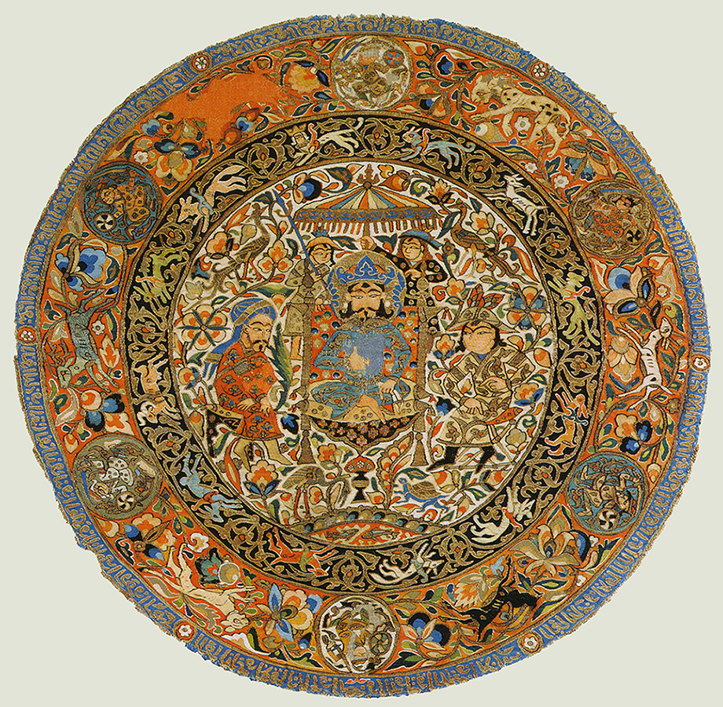
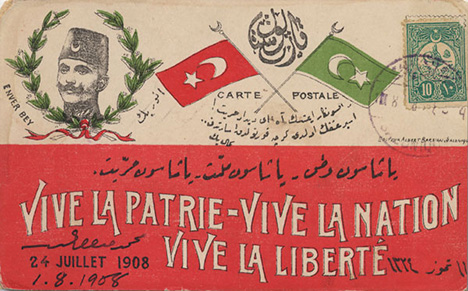
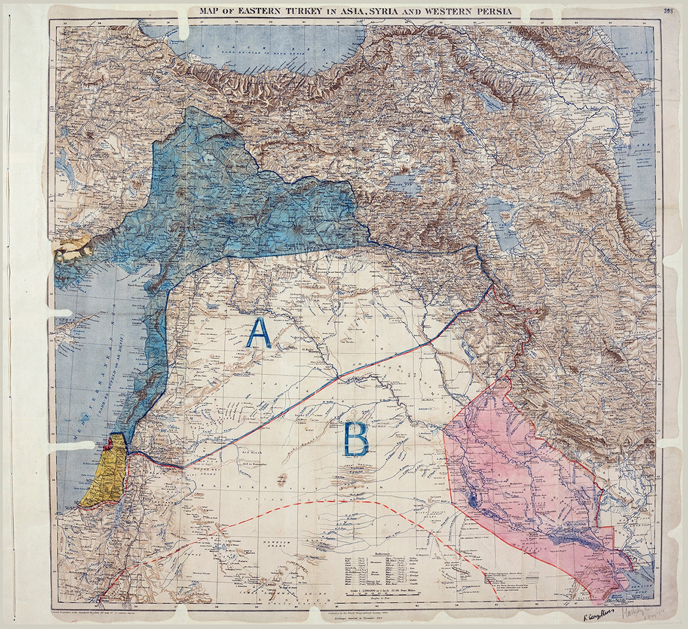
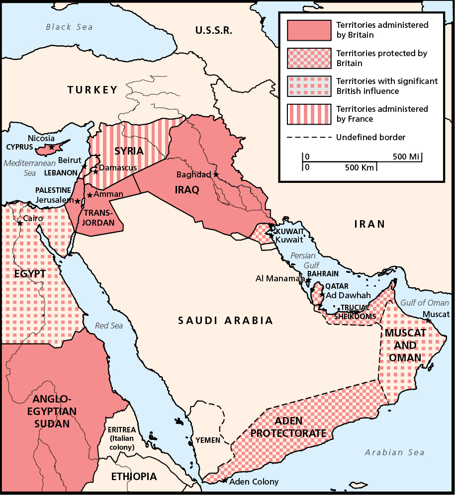
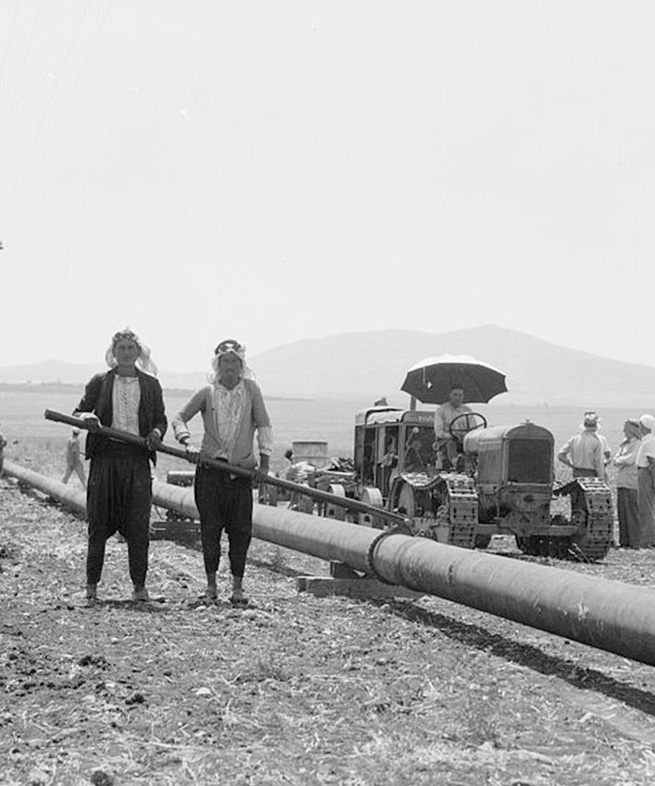

Beginning in the 1500s, the Ottoman Empire (founded in 1299) ruled for three centuries over the territory that stretched from the Persian Gulf to the western end of North Africa. In 1683, the Ottoman military conquered Europe as far west as the Austrian city of Vienna. The empire was ethnically and religiously diverse, composed of Turks, various groups of Christian Slavs, Arabs, Greeks, Armenians, Kurds, Jews, Druze, and others. The ruling dynasty was Turkish and Muslim.
Despite the earlier wealth, scholarship, size, and power of the Islamic empires, one empire, the Safavid dynasty in Iran, collapsed in 1722. By the turn of the twentieth century, the Ottomans had also lost strength. Movements for local political control tested the empire’s authority. In addition, Britain, France, and Russia began to expand their influence in the region, which the Ottoman government could not contain.
An early fourteenth century tapestry made of silk, cotton, and gold from either Iran or Iraq. Art flourished in Islamic empires. For example, the Safavid Empire of Iran was a thriving center of Persian culture from the sixteenth to the eighteenth century. The Safavid capital of Isfahan, with a population of over 400,000, became renowned for its poetry, paintings, and scholarship.Public Domain, via Wikimedia Commons, author unknown.
How did local political movements test the power of the Ottoman Empire?
During the nineteenth century, nationalist and other revolutionary movements challenged the Ottoman Empire. As local elites assumed more political control, religious and ethnic groups questioned the Ottomans’ centralized authority. People led movements for greater political autonomy without calling for outright independence from the Ottoman government. With European colonialism in full force in other parts of the world—mainly in Africa and the southern parts of Asia—most local populations in the Middle East did not want to overthrow the Ottomans or secede from the empire completely because they feared European occupation.
Both Kurdish and Armenian activists in Anatolia (present-day Turkey) fought for more say in local government. The Kurds also led efforts to modernize the Kurdish language and promote a shared history to unite their various tribes within the empire. But, unification was a challenge since Kurds were geographically divided with different dialects and leadership systems.
What role did Arabism play in local revolutionary movements?
Arabs made up the largest non-Turkish group in the Ottoman Empire. Provinces with large Arab populations did not push for full independence until the twentieth century, but they did oppose Ottoman sultans who tried to tighten their control. For example, in the second half of the nineteenth century, an educated, mostly Christian elite wanted to liberate Lebanon (part of the Syrian province) from the Ottoman Turks. While Lebanese Christians were at the center of this resistance, the revolutionaries emphasized the common “Arabism” between Christians and Muslims in Syria as a way to unite people.
You will observe that mention is made of the Lebanon, and the desire set forth is that the condition of the Syrians should be assimilated to that of the people of the Mountain, who practically possess an autonomous government. The wish seems to be to get rid of oppression and injustice, and to procure the establishment of a government in which the people are to have a voice.”
British official John Dickson, telegram sent from Beirut to officials in Constantinople, January 1881
As Arabism grew into a nationalist movement, it had both religious and secular strands. Religious leaders called for the return of a thriving Islamic civilization. The secular strand envisioned an Arab identity that would transcend religious differences, based in a shared language and history. Both groups saw Arab national pride as a way to resist European influence. This movement is sometimes called Pan-Arabism.
A postcard from 1908, featuring Ismail Enver, a military officer and leader of the Young Turk Revolution. (“Bey” identifies his rank in the Ottoman military.) “Long live the country, the nation, and freedom,” is written in Ottoman Turkish and French.Public Domain, via Wikimedia Commons.
In the first decade of the twentieth century, an Istanbul-based group called the Young Turks built a nationalist movement to challenge the growing European presence in Ottoman land. Young Turk policies were sometimes seen as racist toward other groups in the empire, alienating populations of Arab Muslims and Christians. In response to intensifying Turkish nationalism, young Arab leaders formed groups to defend Arab rights. While the majority of Arabs still supported Ottoman rule, the presence of an Arab movement highlighted internal divisions growing within the multi-ethnic empire.
The country from a line Alexandretta-Persia, southward to the Indian Ocean is inhabited by ‘Arabs’—by which we mean people of closely related Semitic stocks, all speaking the one language, Arabic…. The aim of the Arab nationalist movements...is to unite the Arabs eventually into one nation.”
The Emīr Faisal, in a memorandum to the Paris Peace Conference, January 1919
What is Zionism?
Outside the borders of the Ottoman Empire, a group of Jewish intellectuals founded a nationalist movement called Zionism. “Zion” is a Hebrew word that is used to refer to the land of Jerusalem. Zionism is based on the idea that Jews were destined to return to the territory from which they had been exiled by the Romans in the first century. The Zionist movement originated in the late nineteenth century in Eastern Europe, where Jews had long been subjected to anti-Semitism (racism against Jews), violence, and persecution.
Zionists argued that Jews could only flourish if they established an independent political state. Zionism faced a challenge as a nationalist movement since Jews did not live in large numbers in what they saw as their ancestral homeland. Initially, not every Zionist leader insisted on locating the Jewish state in Palestine, a territory in southern Syria home to hundreds of thousands of Palestinian Arabs. After the various strands of the movement unified in the 1890s, Zionists decided it would be the best place to settle. Early settlement efforts in Palestine grew into a presence of roughly sixty thousand Jews by 1914.
How did imperialism challenge the region’s empires?
During the nineteenth century, powerful countries took increasing interest in the region. The imperial powers—Russia, Britain, and France—wanted to increase their wealth and influence. In part, they used ideas about racial and cultural superiority to justify their intervention in the Middle East. As a result of this intervention, the Ottoman Empire gradually lost control of its territory and economy.
Russia, Britain, and France supported many local independence movements, hoping that weakening Ottoman authority would increase European influence. This was especially true in the first half of the nineteenth century—in places like Egypt, Greece, and other Balkan states—before groups in these newly independent countries began turning their resistance against imperial powers.
European powers, eager to gain access to agricultural products and oil, increasingly took control of the Ottoman economy. Oil was becoming a more important energy source for military and civilian uses. Britain and France, with no oil fields of their own, were especially interested in securing access to oil-rich territories. In addition, the Suez Canal, which connected the Mediterranean and Red Seas, was a major trade route to Britain’s colony of India.
What roles did Britain and Russia play in Iran?JO-ANNE HART, LESLEY UNIVERSITY
East of the Ottomans, Russia and Britain competed throughout the nineteenth century for influence in Iran (then known as Persia), ruled at the time by the Qajar Dynasty. Iran was important to both countries as an overseas market. It exported agricultural products and imported manufactured goods from Russia and Britain. Iran’s economy and infrastructure suffered from being caught in a struggle between imperial powers. Russia and Britain ultimately agreed to cooperate in 1912, invading Iran and seizing control. This event illustrated the intensification of foreign military presences in the Middle East.
World War I and the Mandate System
In World War I, the Allied Powers (Britain, France, Russia, and others) fought the Central Powers (Germany, the Austro-Hungarian Empire, and the Ottoman Empire). Although the war’s decisive battles took place in Europe, there was extensive fighting in the Middle East. The war’s outcomes affected the people and territory of the region in major ways.
How did World War I lead to the end of the Ottoman Empire?
World War I (1914-1918) ultimately led to the end of the Ottoman Empire. The British promised Sharif Hussein, the ruler of Mecca, that they would help set up an independent Arab state across the Arab areas of the Ottoman Empire after the war. In exchange, Hussein began a rebellion against the Ottomans. British forces and their Arab allies drove the Ottomans out of most of their Arab provinces by the end of 1918.
What was the Sykes-Picot Accord?
In 1916, diplomats from Britain and France signed a secret treaty known as the Sykes-Picot Accord to divide the Arab provinces of the Ottoman Empire between themselves after the war.
It is accordingly understood between the French and British governments...[that] France and...Great Britain shall be allowed to establish such direct or indirect administration or control as they desire and as they may think fit to arrange with the Arab state or confederation of Arab states.”
Sykes-Picot Accord, May 1916
Not everyone agreed with the Sykes-Picot Accord. When the United States entered World War I with the Allied Powers in 1917, U.S. President Woodrow Wilson (1913-1921) announced a fourteen-point peace plan that he hoped to implement after the war. A key principle in the proposal was “self-determination,” or the right of nations to govern themselves.
The map that Mark Sykes and Francois Picot drew on to divide the Ottoman Arab Provinces between Britain and France. Area A was to be under French control and area B under British control.Public Domain, Royal Geographical Society.
Many Arab leaders and communities opposed imperialism, arguing for self-determination. They wanted a large, independent Arab state that they believed the British had promised in return for rebelling against the Ottomans. The British and French realized that Arab self-determination would undermine their plans to impose the Sykes-Picot Accord and redraw the international borders within the Middle East to suit their political and economic goals.
[T]he whole of the Arab nation without any exception have decided in these last years to accomplish their freedom, and grasp the reins of their administration both in theory and practice….”
Sharif Hussein, leader of Mecca, in a letter to British official Henry McMahon, July 14, 1915
What agreement was reached after World War I?
In 1919, diplomats led by the Allied Powers met at the Paris Peace Conference to make a postwar peace plan. The final agreement allowed the European Allied Powers not only to keep their existing colonies around the world, but also to expand their empires into new regions, including the Middle East.
The Peace Conference also created an international system called the League of Nations. The leaders of the conference said the League would make the world safer and serve as a forum for negotiating international issues.
President Wilson advocated for the League of Nations, arguing that it would prevent international wars. But, the U.S. Senate rejected the agreement. As the United States played less of a role in international politics following World War I, Britain and France were able to implement the Sykes-Picot Accord and claim the former Ottoman territories for themselves.
How did the mandate system allow European powers to exert control in the Middle East?
The League of Nations claimed that many former-Ottoman areas were unprepared for self-governance and needed advice from “advanced” powers before gaining independence. The League’s dominant powers used this idea of superiority to justify exerting control over the areas in question.
To those colonies and territories which as a consequence of the late war have ceased to be under the sovereignty of the States which formerly governed them and which are inhabited by peoples not yet able to stand by themselves under the strenuous conditions of the modern world, there should be applied the principle that the well-being and development of such peoples form a sacred trust of civilisation….”
Excerpt from Article 22 of the League of Nations Charter, 1920
The League established “mandates,” giving Britain and France authority to manage the new states created from the former Ottoman Empire. The French took over Syria and Lebanon. Britain added the mandates of Iraq, Palestine, and Jordan to territories it already controlled—including Egypt, Kuwait and coastal areas of the Arabian Peninsula. The British and French did not call the mandates “colonies,” but the people living within these areas saw themselves as subjects of European colonialism.
How was Great Britain involved in the creation of Iraq?CHARLES TRIPP, UNIVERSITY OF LONDON
Europeans drew new borders and put rulers in power whom they could influence. The new borders were drawn to suit the economic and political interests of the imperial powers. For example, Britain combined the three former Ottoman provinces of Basra, Baghdad, and Mosul into what would become Iraq. The British crafted these borders to serve Britain’s economic interest: to efficiently administer the oil reserves of these provinces.
The new borders ignored the interests of local people. The peoples of Basra, Baghdad, and Mosul had no shared sense of national unity or identity. They had different religions—about half were Shi‘i Muslim, a quarter Sunni Muslim, and the rest Jews and Christians. Ethnic differences existed as well—half were Arabs, while the rest were Kurds, Persians, and Assyrians. (Though the Allies considered granting Kurds their own territory after World War I, the Kurds were ultimately divided among different mandates.)
Between 1922 and 1939, the British also supported Zionists moving to Palestine. As the Jewish population in Palestine rose from 84,000 to 445,000 (about 30 percent of Palestine’s population), Zionists increasingly found themselves at odds with the established community of Palestinian Arabs. British efforts failed to hold down escalating tensions between Palestinians and Jews.
The pattern of imposed political borders repeated itself throughout the region, becoming a source of conflict for the next century.
The outlines of the countries of the present day Middle East were clearly recognizable by the 1920s. With few changes, the map drawn at the Paris Peace Conference is the same one that exists today.
Oil Politics During the Interwar Period
After World War I, European powers continued to compete for control of the Middle East. While Britain and France still dominated during the interwar period, U.S. economic interest in the region began to grow.
Middle Eastern oil was increasingly a motivation for foreign interest in the region. The First World War was powered largely by coal, but people realized oil would soon become a critical energy source—for the military and for civilian economies.
Petrol…is as necessary as blood in the battles of tomorrow.”
French Prime Minister Georges Clemenceau to U.S. President Wilson, 1917
Where was oil produced in the Middle East?
During the 1920s, the two main centers of oil production in the region were northeastern Iraq and the Iranian side of the Persian Gulf. Britain created the borders of Iraq in a way that allowed British companies access to all oil discovered in the region. In Iran, Britain had controlled oil production for years through the Anglo-Persian Oil Company.
Following the Sykes-Picot Accord, France tried to negotiate agreements with Britain to share in the exploitation of this oil. Britain kept control of production but promised France some of the region’s oil, in exchange for French permission to build an oil pipeline through Syria.
British oil interests now have the whole Eastern Mediterranean as an outlet for their oil.”
John Cadman, director of the Anglo-Persian Oil Company, to British diplomat Sir Hamar Greenwood, December 1919
Roughly half of the world’s known oil reserves lie beneath the land and seas of the Arabian Peninsula. Serious oil exploration did not take place in Saudi Arabia and the neighboring Gulf States until the 1930s, after the United States had become more involved in the region’s oil economy.
How did the United States become involved in the oil politics of the Middle East?
Unlike European countries, the United States had extensive oil resources and produced roughly two-thirds of the world’s oil during World War I. Still, U.S. policymakers worried that domestic supplies might run low, so they encouraged companies to look overseas for new reserves.
Two major U.S. oil companies began exploring in Bahrain at this time. Oil was discovered in 1932, leading to increased U.S. interest.
Throughout the 1920s, the royal family in Saudi Arabia was reluctant to allow in foreign oil firms. At the same time, the country’s leaders wanted to improve the kingdom’s financial situation and saw the potential economic benefits of making a deal with overseas companies. In 1933, the Saudi government signed a sixty-year agreement with a U.S. firm to begin oil exploration. The U.S. company paid a lump sum and promised royalty payments on any oil produced, in exchange for permission to explore a vast portion of eastern Saudi Arabia.
Kuwait had a similar first encounter with international oil firms. After economic decline in the 1920s and early 1930s, Kuwait’s ruler signed a joint agreement with U.S. and British oil companies. In 1934, these companies became joint owners of the Kuwait Oil Company in exchange for royalty payments to the Kuwaiti government. They began drilling two years later, leading to lucrative discoveries.
How did foreign control of oil affect the Middle East?
International involvement in the Middle East’s oil production affected Middle Eastern economies and politics. The fact that foreign countries controlled the process and machinery of oil production meant that countries in the region lost direct economic gain from their own resources. At the same time, international oil companies promised shares of their revenue to local governments. In countries such as Saudi Arabia and Kuwait, these deals helped reverse serious economic depression.
How has oil affected the history of Iraq?CHARLES TRIPP, UNIVERSITY OF LONDON
In some cases, oil production brought extreme wealth to Middle Eastern countries. Political power was concentrated among the ruling dynasties that made deals with foreign oil companies. Ruling families distributed oil profits across their populations to a certain extent, but they also worked to preserve their own wealth and power by preventing democratic political institutions from emerging.
During the interwar period, Iran, Iraq, and many Gulf countries worked to rely less on oil revenue. While oil was a lucrative resource, a focus on oil production harmed local economies. Countries that relied heavily on oil profits did not always develop production systems around other resources—for example agriculture. This held back potential for other kinds of economic growth.
How did people in some countries resist imperialism?
Throughout the Middle East at this time, people resisted imperialism in various ways. They demanded freedom from the cultural, political, and economic control that the United States, Britain, and France asserted over their countries.
In Iran, leaders had hoped to free themselves from the dominance of European powers after World War I. But after the Russians left during their own revolution in 1917, the British took an even greater role in Iran, working to maintain access to Iranian oil. British officials and Iran’s prime minister were ready to sign an agreement that would have given the British greater power in Iran, but Iranians responded with widespread protests. Public discontent led Iran’s parliament to refuse to ratify the agreement.
It is true that people who are not involved in politics do not (necessarily) detect the scent of the death of Iranian independence that this Treaty entails, but within two or three days, the elite get excited, and the masses, too, follow. A group of members of the government get together and speak out against the Treaty. A group from among the clergy bluntly expresses their dissatisfaction in gatherings and meetings…. Gradually, there is an uproar.”
Yahya Dawlatabadi, an Iranian recalling public reactions to the Anglo-Persian Agreement in The Life of Yahya, published 1982
Britain was equally intent on maintaining its influence in Egypt after World War I. In 1919, a nationwide anti-British uprising in Egypt forced Britain to negotiate an agreement about its presence there. This nationalist revolt was led by a new political party whose main goal was independence from foreign powers. Similarly, a massive anti-British uprising in Iraq in 1920 convinced British officials that they had to find a way to protect British interests in Iraq without directly governing the people.
British and French influence in the Middle East, 1926.
The French used a “divide and rule” strategy in their mandates by creating borders that emphasized existing religious, ethnic, and regional differences. They divided Syria and Lebanon in ways that increased the possibility of local conflict and made it less likely that unified resistance movements would develop. The French army squashed most instances of local resistance in Syria before they spread. One exception was the Great Revolt of 1925-1927, which became a nationwide movement against French authority. French policymakers ultimately agreed to revise their system for controlling Syria, but they did not give up their control.
Turkey and Saudi Arabia were the only Middle Eastern countries to gain complete independence after World War I. In Turkey, the Young Turks overthrew the last remnants of the Ottoman Empire, drove out the occupying Allied forces, and established a republic in 1923. In Saudi Arabia, the new monarchy carefully limited connections with the outside world.
World War II and the Middle East
World War II (1939-1945) was the largest military conflict in history. The Allied Powers (Britain, China, France, the Soviet Union, the United States, and others) fought the Axis Powers (Germany, Italy, Japan, and others). Fifty to eighty-five million people died during the war. There were important battles and political developments all over the world, including in the Middle East. Protecting access to the region’s oil resources and the Suez Canal were among the Allied Powers’ priorities.
World War II also marked the beginning of a more active U.S. role in international affairs, including in the Middle East. The U.S. State Department began to establish diplomatic relations with governments in countries where oil companies had previously done most of the negotiation. For example, in 1943, President Franklin Roosevelt (1933-1945) began providing aid to the Saudi monarchy, which was on the verge of financial collapse because of the war.
Our foreign oil policy will probably become more aggressive and will come more and more to resemble Great Britain’s policy of the past thirty years.”
Walton C. Ferris, a foreign service officer, to U.S. official Max Thornburg, November 1941
When World War II ended, the United States was the most powerful country in the world. Unlike Europe and Asia, the U.S. mainland escaped devastation. U.S. industry reached new levels of productivity during the war, supplying much of the Allied equipment. Seeking even greater economic growth, U.S. policymakers focused on guaranteeing access to international oil.
How did World War II illustrate the increasing importance of oil?
World War II demonstrated the emerging importance of oil in international politics. Oil was essential for the armies of World War II. The decisive weapons of the conflict—airplanes, tanks, and military trucks—all ran on fuels derived from oil.
An army no longer marches on its stomach; an army marches, a navy sails, and an air force flies on oil….In both essentiality and quantity, oil has become the greatest of all munitions.”
Deputy Petroleum Administrator for War Ralph K. Davies, November 1945
The quest for oil shaped the war aims of the Axis Powers, Germany and Japan. Allied leaders wanted to prevent the energy resources of the Middle East from falling into the hands of Nazi Germany. Like the British and French in World War I, U.S. officials in World War II wanted to secure access to foreign oil. This goal became a key factor in U.S. foreign policy after the war.
How did European powers hold back independence movements in the Middle East during World War II?
During World War II, a growing number of anti-imperialist movements throughout the Middle East continued to seek independence from Britain and France. Participants wanted to end foreign influence in their states’ political and economic affairs. They expressed growing frustration with local politicians who cooperated with the British and French.
The Arabs were deeply disappointed by the breach of promise by the Allies after the last World War. The nationalist hope did not materialize; no Arab unity; Palestine promised to the Jews; Syria cut to pieces; Iraq under mandate. President Wilson’s promise of self-determination was thrown in the waste-basket.”
Dr. Fadhil al-Jamali, Iraqi educator and politician, in “A Personal Note on the History of Popular Feeling in Iraq towards the Allies with Constructive Suggestions,” undated (pre-1944)
Despite their efforts, independence movements were unable to remove European powers from their affairs. Below are a few examples of how imperialist powers prevented independence movements from rising up at this time.
Egypt: British military forces used Egypt as their main Middle Eastern base of operations during the war. With Nazi Germany’s forces approaching, the British forced Egypt’s king to replace a prime minister sympathetic to the Axis Powers. For the new government, the British selected members of a political party that had previously been a champion of Egyptian independence. King Faruq’s powerlessness to oppose this move weakened Egyptians’ faith in their political leaders and stunted hopes for Egyptian independence. The years following the war would see a reemergence of nationalist groups on Egypt’s political scene.
British imperialism is chiefly responsible for backwardness in our economy.... It is also chiefly responsible for backwardness in our political life...the main aim of the national movement...is to eradicate this situation which we find in our country.”
Ahmad Sādiq Sa‘d, co-founder of Egyptian communist group al-Fajr al-Jadid, in a 1946 article in al-Fajr al-Jadid
Workers from the Iraq Petroleum Company working on a section of oil pipeline between 1934 and 1939. Eric and Edith Matson Photograph Collection, Library of Congress Prints and Photographs Division, LC-M33- 7456.
Iraq: Toward the beginning of World War II, a new government inspired by Iraqi nationalism and Pan-Arabism formed in Iraq. Government officials, who were loosely pro-Axis, took advantage of Britain’s engagement in the war to assert Iraq’s full independence. When the Iraqi government refused to allow British soldiers to pass through Iraq on their way to North Africa, Britain invaded Iraq. The British occupied Iraq for the rest of the war. They put leaders in power who helped protect British interests. This increased doubt among Iraqis about the possibility of an Iraq free from British interference.
Iran: Between 1939 and 1941, Germany was Iran’s leading trading partner. Iran’s ruler distrusted the British and hoped that stronger ties with Germany would counter British influence in Iran. After the German invasion of the Soviet Union in 1941, Allied leaders worried that Germany would launch military operations from Iran against the Soviet Union. A few months later, Soviet and British forces invaded Iran, leading the government to surrender. Foreign occupation reduced the power of Iran’s central government, strained its economy, and opened the door to U.S. intervention in the country’s affairs. In the short-term, these changes led to the rise of many political parties that competed with each other for influence in Iran. Eventually, foreign occupation would galvanize a more unified Iranian nationalist movement.
Syria: Despite attempted revolts against French rule, Syria remained France’s overseas territory at the start of World War II. After France surrendered to Germany in 1940 and formed the French Vichy government (which collaborated with the Axis), officials loyal to the Vichy regime administered Syria. British and anti-Vichy Free French forces invaded Syria in 1941 to keep it out of German hands, seizing control from the French Vichy officials. The British and the Free French leader Charles de Gaulle agreed to grant Syria independence, but the new Free French regime did not keep this promise and restored Syria’s mandate status. Even when pro-independence groups won an election in 1943, French officials refused to hand over power. Political repression by the French denied Syrians the experience of governing themselves.
Why did the war increase Jewish immigration to Palestine?
During World War II, Nazi leader Adolf Hitler sought to exterminate all of the Jews of Europe, whom the Nazis considered inferior. In six years, the Nazis murdered twelve million civilians (including six million Jews) in a genocide known as the Holocaust.
After the war, hundreds of thousands of Jewish refugees saw immigration to Palestine as the only hope for rebuilding their lives. The Holocaust won the Zionists widespread sympathy in the United States, where President Truman (1945-1953) became personally committed to the Zionist cause.
Before the outbreak of World War II, large numbers of Jews had immigrated to Palestine in response to anti-Semitic laws and violence in Europe. The massive migration of Jews after the war increased tensions with the Arabs living in Palestine. This conflict would be a major focus of U.S. foreign policy in the Middle East during the coming decades.